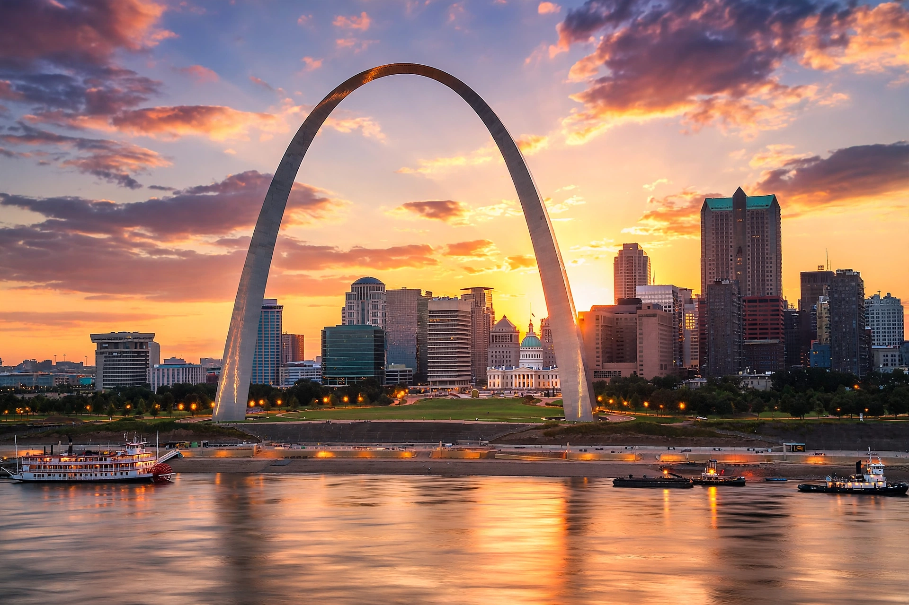

Missouri is a state in the Midwestern United States, the 21st-largest by area and 19th-most populous. Its capital is Jefferson City; its largest city is Kansas City, and its largest metropolitan area is Greater St. Louis.

| State of Missouri | |
|---|---|
| Capital | Jefferson City |
| Largest city | Kansas City |
| Admitted | 10 August 1821 (24th) |
| Population | c. 6.2 million |
| Nickname | Show-Me State |
Missouri is bordered by eight states including Kansas to the west. The Missouri and Mississippi rivers flow through it; the Ozark Mountains lie in the south.
Acquired in the Louisiana Purchase (1803), Missouri entered the Union as a slave state under the Missouri Compromise of 1820. St. Louis, with its Gateway Arch, was the 'Gateway to the West' for pioneers on the Oregon Trail.
Major industries include agriculture, aerospace, and food processing. Missouri is known for Kansas City jazz and barbecue, St. Louis blues, and author Mark Twain of Hannibal.